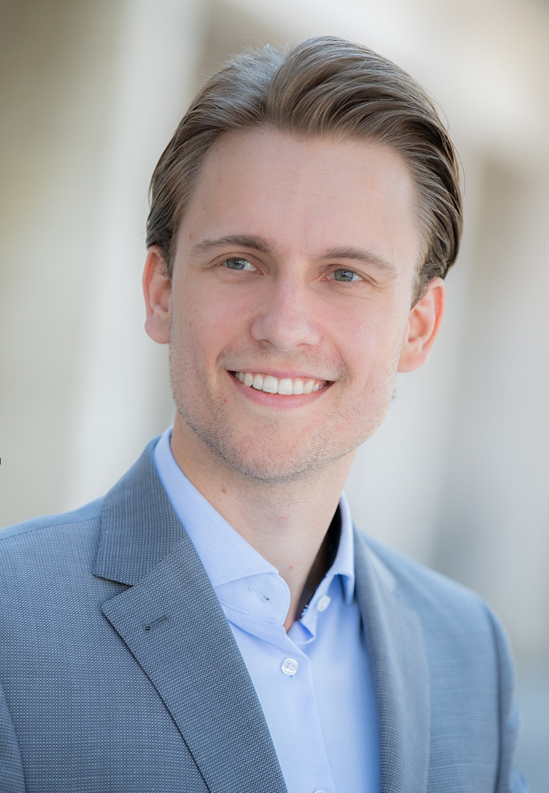

Matthias Ludwig, M.Sc.
I am a PhD Student at the Chair of Security in Information Technology, Department of Electrical and Computer Engineering at Technical University of Munich supervised by Prof. Dr.-Ing. Georg Sigl. The PhD is backed by the Connected Secure Systems (CSS) division of Infineon Technologies AG in Munich.
Through innovative hardware reverse engineering and physical inspection methods, I aim to foster trustworthy and secured hardware.
Research Interests
- Physical and Functional Hardware Reverse Engineering
- Hardware Assurance and Security
- Physical Inspection
- Anti-Counterfeiting
- Hardware Trojan Mitigation Techniques
Contact
News
- Research Project: We are contributing to the funding project RESEC of the German Ministry of Education and Research.
- Research Project: We are contributing to the funding project AI4DI of ECSEL JU.
- Research Project: During my Master's thesis at Infineon Technologies AG, I contributed to the funding project SyPASS of the German Ministry of Education and Research.
Publications
-
-
-
-
-
-
Verification of physical designs using an integrated reverse engineering flow for nanoscale technologies
Bernhard Lippmann,
Niklas Unverricht,
Aayush Singla,
Matthias Ludwig,
Michael Werner,
Peter Egger,
Anja Duebotzky,
Helmut Graeb,
Horst Giesser,
Martin Rasche,
Oliver Kellermann.
Integration the VLSI Journal (2020), Elsevier.
Miscellaneous
- Presentation: 2020-01-23, University of Bologna, AI4DI Symposium: AI as Opportunity for VLSI IC Analysis (see Link).
- Award: 2017-05-17, OTH Regensburg, VDI-Symposium "Potentiale der Digitalisierung": VDI Award for outstanding Bachelor's thesis (see Link).
Education
- 2021 - today: PhD Candidate at the Chair of Security in Information Technology, Department of Electrical and Computer Engineering, Technical University of Munich, Munich, Germany.
- 2017 - 2019: Master of Science in Electrical Engineering and Information Technology, majoring in Communication Technology at Hochschule München, München, Germany.
- 2013 - 2017: Bachelor of Engineer in Electrical Engineering and Information Technology, majoring in Electronics at OTH Regensburg, Regensburg, Germany.
Vita
- 12/2017 - today: Reverse Engineer at Infineon Technologies AG, Munich, Germany.
- 04/2015 - 08/2017: Research Assistant at OTH Regensburg, Regensburg, Germany.
- 10/2016 - 03/2017: Bachelor's Thesis Student at Rood Microtech GmbH, Nördlingen, Germany.
- 10/2015 - 02/2016: Process Engineering Intern at OSRAM Opto Semiconductor GmbH, Regensburg, Germany.
- 02/2015 - 03/2015: Maintenance Engineering Intern at Maschinenfabrik Reinhausen GmbH, Regensburg, Germany.
|